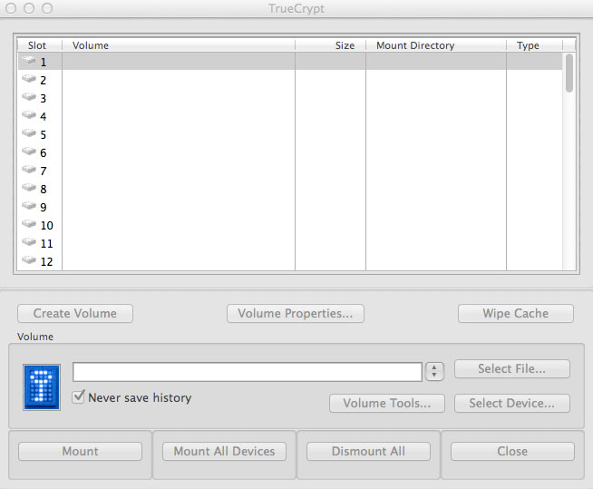

- Problem
It's March and you're rushing to finish up your taxes. You fill out line after line of personal information: social security number, how much money you made over the past year from your job, lists of assets, current debt, the list goes on. We've become accustomed to blindly filling out this sort of information without considering the consequences of what would happen if this information got into the wrong hands. Anyone with access to your computer and a little curiosity could search for this information and use it in numerous ways against you that could leave your credit and finances in ruins, not to mention the headache of going through countless hours of stress dealing with the situation.
This is just a small example to make you aware of what years have taught you in the physical world: expect the unexpected to stay protected. You're just as suceptable to this scenario as you are to every day accidents. You put on a seatbelt in your car to prevent injury. You use a pin to access your bank account so other people cannot access your money. If you knew how to easily password protect your digital information, why not prevent an unforeseen circumstance?
- Solution
Build yourself a digital safe.
You've heard the word "encryption" thrown around, but it just sounds like computer jargon that is out of your comfort zone. As daunting as it sounds, there's an easy solution available to encrypt sensative files or even your entire hard drive by using a program called TrueCrypt.
- Download TrueCrypt
If you're ready to start, click here to go to the download page where you can select the option right for your operating system. Follow the instructions to install TrueCrypt. Once you're good to go, open TrueCrypt up and your main page should look something like this:

This will be your main menu whenever you open TrueCrypt. You will use it to encrypt drives, create encrypted containers (this will be explained later), and it will be the place you access all of your encrypted containers.
- Encrypt
You are now ready to begin encrypting the drive that you wish. You have a couple of options right now: encrypt the entire drive, create an encrypted container, or create an encrypted container with multiple passwords. Each of these options are useful for different effects. Encrypting your entire hard drive or some other media (i.e.flash drive, SD card) is a useful option, but every time that you want to access your drive you will be required to enter a password in order to do so. The next option is the most ideal option by creating an encrypted container. A container is like fencing off part of your drive's "yard" to be password protected, and this fenced in portion can be some new file or be hidden in some other file that already exists (i.e. a video). To clearify, you can use this already existing file to disguise your container as it. This option is also helpful since you will only need to mount the container when you want to access these files and can use the rest of the drive whenever needed. Also, you can create multiple containers, or containers within containers that allows an "inception" style level of encryption. The last option allows you to create a container with multiple passwords. It could be possible that someone is forcing you to divulge information that you have encrypted and this will allow you to easily enter a back up password that will take the user to an alternative location. We will walk through encrypting a container as you are most likely to use this option and explain options along the way.
- Step 1: Open TrueCrypt and click "Create Volume"
- Step 2: Select "Create an ecrypted file container"
At this option you have the ability to choose "Create a volume within a partion/drive". If you have a lot of information to encrypt this may ba a good option. If you would rather not enter a password every time you access the drive/partion, carry on with the suggested option.
- Step 3: Standard TrueCrypt volume
You will notice that you also have the aforementioned ability to create a hidden volume. If you feel safer having multiple passwords for your encryption you may continue with that option. Otherwise it is suggested that you carry on.
- Step 4: Volume Location
PLEASE be careful here! We are now naming our container and we have two options. You can find a file you would like the container to reside in on your hard drive but keep in mind that it will erase that files information and replace it with the container. It will still look like a different file type (i.e. movie, song, .docx, etc) but al previous information will be gone. If you don't want to disguise it as another file type, you can name it anything you wish (TrueCrypt suggests "truecrypt container").
- Encryption Options
Algorithms are step by step logical procedures in order to achieve a desired goal and there are many different algorithms used to encrypt information. This page lists the most popular (and effective) algorithms that exist to encrypt information and allows you to select among the options. If you are inexperienced just select the default AES option unless you are familiar with other options (same for the default hash algorithm). AES is a very fast and efficient, military-grade algorithm that will without a doubt keep your information safe.